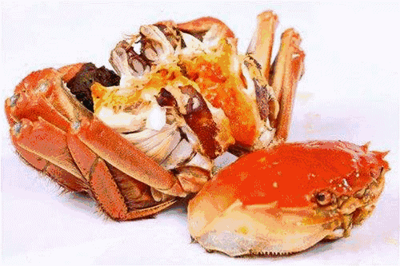

大闸蟹
洪泽湖大闸蟹营养丰富，含有多种维生素。同时，洪泽湖大闸蟹还具有舒筋益气、理胃消食、通经络、散诸热、 散淤血之功效。现代研究发现，蟹壳含有一种物质——甲壳质，甲壳质中可提炼出一种称为ACOS-6的物质，它具有低毒性免疫激活性质， 动物实验已证实，该物质可抑制癌细胞的增殖和转移。但是由于我们不能够直接城掉螃蟹壳，所以只能通过提取成胶囊获取。
骆马湖水多来自沂蒙山洪和天然雨水，沿湖又无工业污染，常年水体清澈透明，湖滩浅水中生长密密扎扎的芦苇和众多浮游生物，为鱼类生产提供了良好的生态环境和水资源。 到了秋天，骆马湖的螃蟹也上市了，骆马湖螃蟹个体硕大，雄者脂白如玉，雌者脂黄似金，是一种难得的风味佳肴，此时到宿迁，正是品尝骆马湖螃蟹的最佳时节。 蟹身不沾泥，俗称清水大闸蟹，体大膘肥，青壳白肚，金爪黄毛。肉质膏腻，十肢矫健，置于玻璃板上能迅速爬行。 每逢金风送爽、菊花盛开之时，正是金爪蟹上市的旺季。农历9月的雌蟹、10月的雄蟹，性腺发育最佳。煮熟凝结，雌者成金黄色，雄者如白玉状， 滋味鲜美，配以姜醋，喝上温热的黄酒，是每一个资深吃货按捺不住的小心跳！